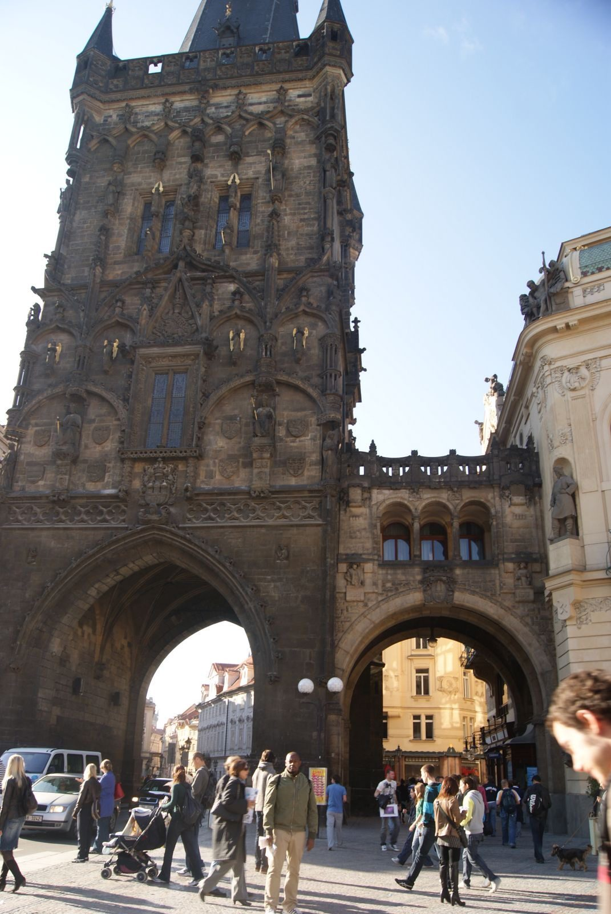
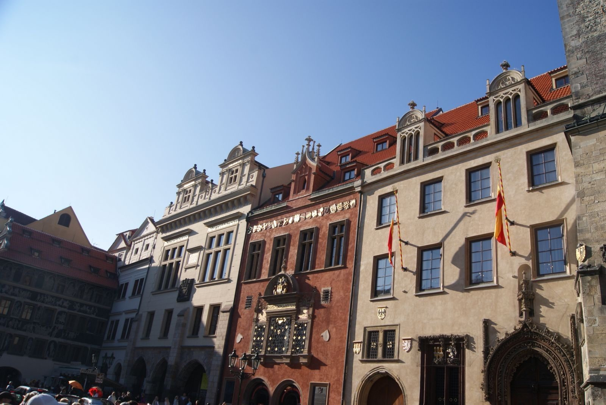
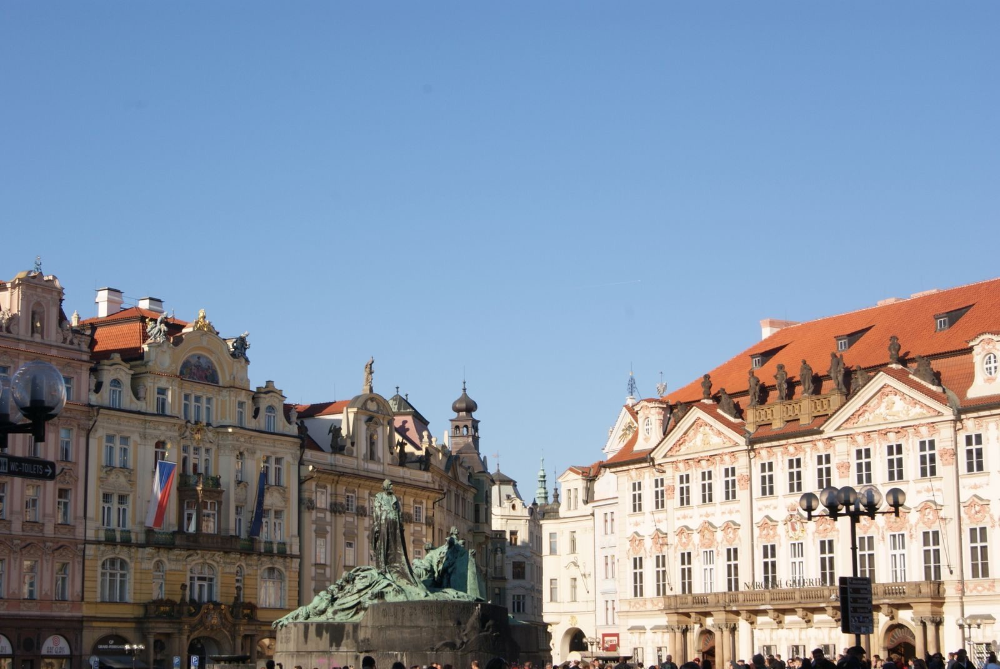
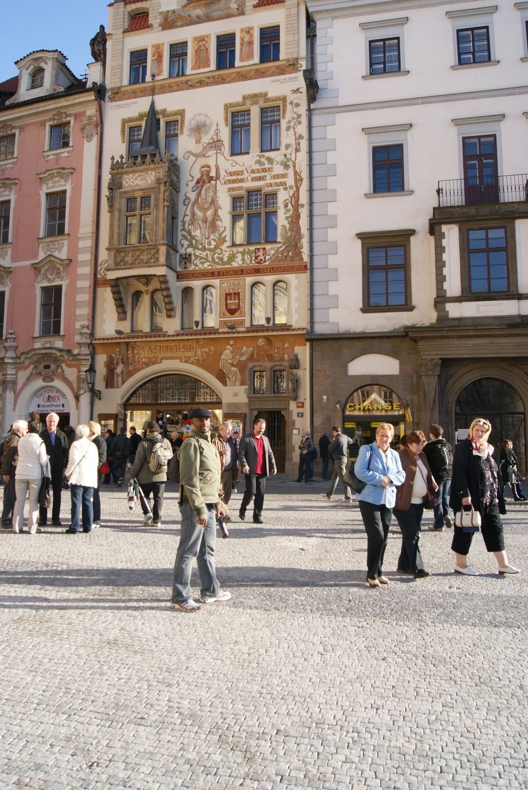

Les rues de la Vieille Ville
Dès les premiers pas, Prague vous avale. Pavés irréguliers, façades pastel, enseignes en fer forgé… On se croirait dans un décor de film.
La Maison municipale (Obecní dům)
Ce joyau Art nouveau sur Náměstí Republiky marque l’entrée dans la Vieille Ville, juste à côté de la Tour poudrière.

La Tour poudrière (Prašná brána)
L’une des treize anciennes portes de la ville, ancien dépôt de poudre à canon, qui ouvre le passage vers la Vieille Ville.
Rue Celetná
L’une des plus anciennes rues de Prague, sur l’axe royal qui relie la Tour poudrière à la Place de la Vieille Ville.

Façades de la Place de la Vieille Ville
Chaque maison a son style et sa couleur : un patchwork architectural accumulé sur plusieurs siècles.

Place de la Vieille Ville (Staroměstské náměstí)
Au centre, le monument à Jan Hus, réformateur religieux tchèque brûlé en 1415, veille sur la place depuis 1915.

Maison à sgraffites, à deux pas de l’Hôtel de Ville
Ce type de façade grattée en motifs géométriques est une signature du centre historique ; l’identification précise de cette maison reste à confirmer.
C’est ici que le voyage commence vraiment. Le bruit des valises sur les pavés, les conversations en dix langues, l’odeur du trdelník…